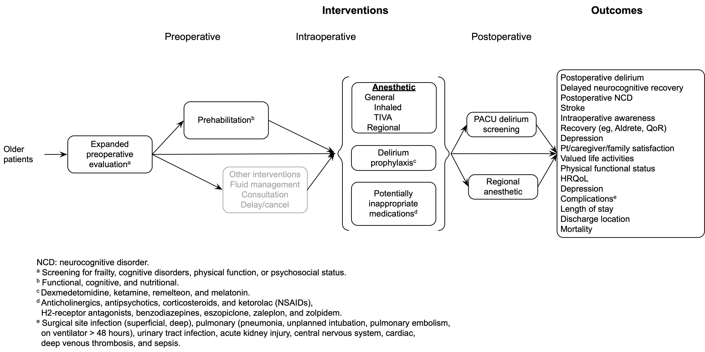

Protocol
Draft Systematic Review Protocol
Background
Between 2019 and 2060, the number of US adults aged 65 years or older will likely increase from 54 to 95 million; the oldest-old (85+ years) will grow from 6.6 to 19 million over the same period.1,2 These demographic shifts carry significant implications for the practice of anesthesiology. In 2007, the elderly (15% of the US population) underwent 35% of inpatient surgeries.3 In 2006, 32% of outpatient surgeries were performed in the elderly.4 Moreover, the risk of postoperative complications increases with age.5,6 Improving the quality of perioperative care for older adults is a major priority for patients, providers, and policy makers.
Systematic Review Questions
Among older patients anticipating surgery and anesthesia, does expanded preoperative evaluation (eg, for frailty, cognitive impairment, functional status, or psychosocial issues) lead to improved postoperative outcomes?
Among older patients undergoing surgery, does regional anesthesia as the primary anesthetic technique improve postoperative outcomes compared with general anesthesia?
Among older patients undergoing surgery with general anesthesia, does the use of intravenous agents for maintenance of anesthesia improve postoperative outcomes compared with inhaled agents?
Among older patients undergoing surgery and anesthesia, do commonly used potentially inappropriate medications administered during the perioperative period increase the risk of postoperative delirium or other adverse outcomes?
Among older patients undergoing surgery and anesthesia, do dexmedetomidine, ketamine, ramelteon, or melatonin administered during the perioperative period decrease the risk of postoperative delirium or other adverse cognitive outcomes?
PICOTS
Population
Patients 65 years or older undergoing general anesthesia, sedation, or regional anesthesia for surgical procedures.
Subgroups
Age
65-74
75-84
85+
Sex
Race
Ethnicity
Frailty
Mild neurocognitive disorder (mild cognitive impairment)
Major neurocognitive disorder (dementia)
Elective surgery
Emergency surgery
Type of procedure
ASA classification
ASA I-II
ASA III or higher
Interventions
Preoperative
Expanded preoperative evaluation (frailty, cognitive, functional, or psychosocial)
Primary frailty tools to include (but not limited to)
Fried Frailty Index
Frailty Index
Clinical Frailty Scale
Edmonton Frail Scale
Risk Analysis Index
Prehabilitation (functional, cognitive, nutritional)
Intraoperative
Regional anesthesia as the primary anesthetic
TIVA
Inhalation agents
Potentially inappropriate medications
Anticholinergics
Antipsychotics
Corticosteroids
Ketorolac and NSAIDs
H2-receptor antagonists
Benzodiazepines
Nonbenzodiazepine benzodiazepine receptor agonist hypnotics: eszopiclone, zaleplon, zolpidem
Drugs to prevent delirium (dexmedetomidine, ketamine, ramelteon, or melatonin)
Postoperative
Postoperative regional anesthetics for lower limb pain (continuous epidural, nerve block with catheter)
PACU screening for delirium
Comparators
Preoperative
Standard preoperative evaluation
No prehabilitation
Intraoperative
Regional anesthesia as the primary anesthetic
TIVA
Avoidance of potentially inappropriate medications
No drugs to prevent delirium
| Intervention(s) | Comparator(s) | |
|---|---|---|
| Preoperative | Expanded preoperative evaluation (frailty, cognitive, functional, psychosocial) |
Standard preoperative evaluation |
| Intraoperative | Regional anesthesia as the primary anesthetic | General anesthesia |
| Total intravenous anesthesia | Volatile anesthetics | |
| Anticholinergics Antipsychotics Corticosteroids H2-receptor antagonists Benzodiazepines Nonbenzodiazepine benzodiazepine receptor agonist hypnotics: eszopiclone, zaleplon, zolpidem |
None | |
| Drugs to prevent delirium (dexmedetomidine, ketamine, ramelteon, or melatonin) | None |
Outcomes
Postoperative delirium
Neurocognitive disorder <30 days (< 30 days after procedure)
Neurocognitive disorder ≥30 days (to 1 year)
Stroke
Recovery (eg, Aldrete and Quality of Recovery scores)
Depression
Patient/caregiver/family satisfaction
Valued life activities
Physical functional status (independence/disability)
Health-related quality of life
Complications
Surgical site infection
Respiratory (pneumonia, unplanned intubation, pulmonary embolism, on ventilator > 48 hours)
Urinary tract infection
Acute kidney injury
Central nervous system (stroke, nerve injury)
Cardiac (MI, arrest)
Deep venous thrombosis
Sepsis
Length of stay
Discharge location
Home
Rehab/skilled/short-term, long-term care, or other than primary residence
Mortality
Timing
- Perioperative period through 1 year
Settings
- Any surgical
Analytic Framework

Methods
Search
The literature search will include publications from 2000 to present (PubMed, Embase, Scopus, and Cochrane Central).
Study inclusion/exclusion criteria
Studies of older patients. (Studies including younger patients will be considered if a result is judged transportable to the target population).
Publication Types
Published journal articles, reports
Language restrictions: English language only
Limited to humans
Grey literature
Study Designs
Include
Randomized clinical trials
Non-randomized trials
Quasi-randomized designs (eg, before-after studies, interrupted time series)
Cohort studies (prospective, retrospective)
Case-control studies
Other observational studies (eg, diagnostic accuracy)
Exclude
Case reports and case series
Surveys, questionnaires
Letters
Editorials
Conference abstracts
Systematic reviews and meta-analyses (for reference checking)
Search Strategies
(Separate document)
Data Abstraction and Management
Title/abstract and full-text screening together with data extraction will be performed on the DistillerSR platform.7 All screening will be conducted in duplicate, with disagreements resolved by consensus or a third reviewer as needed.
Anticipated data extraction includes study characteristics (eg, design, dates, setting, centers, country, funding, registration, subgroups, surgery, and anesthetic), study arms (eg, intervention, participant characteristics, intervention, and outcomes reported), and outcome detail according to type (eg, patient-reported or clinical; continuous, dichotomous [includes relative effects], rating scales [Likert, visual analog, numeric]). As required, figures will be digitized. A single reviewer will extract study data followed by verification.8
Risk of Bias of Individual Studies
Risk of bias assessment for randomized trials will be conducted using the Cochrane risk of bias tool. 9 Risk of bias assessment of non-randomized studies of interventions (eg, observational studies of interventions including cohort, case-control, and quasi-randomized designs) will utilize the Risk Of Bias In Non-randomised Studies of Interventions tool (ROBINS-I).10 Risk of bias will be assessed independently by two reviewers with discrepancies resolved by discussion, or a third reviewer as needed.
Evidence Synthesis
As appropriate, based on clinical and methodological heterogeneity, study results will be pooled in either pairwise or network meta-analyses in random effects models (given the goal of estimating unconditional effects not relevant only to the pooled studies).11 Statistical heterogeneity is evaluated using between study variance and I2.12 When there is meaningful heterogeneity and the number of studies sufficient (eg, 10 or more) meta-regression is considered to explain the variability.13 With 10 or more pooled studies, small study effects and the potential for publication bias will be examined in funnel plots, regression-based tests, adjustment methods, and p-curves.14,15
Relative effects will be pooled as risk ratios for clinical interpretability except when adjusted measures reported as odds are pooled. Continuous measures are pooled as mean differences or standardized mean differences when studies use differing scales. When practicably, standardized mean differences will be re-expressed on the most meaningful scale.16 R (R Foundation for Statistical Computing, Vienna, Austria) will be used for analyses and data made publicly available when the guideline is completed.
Grading the Strength of Evidence
The strength (certainty) of evidence for important outcomes will be appraised using either GRADE17 and ACCF/AHA18 frameworks.
Registration
TBD
Modification
| Date | Section | Modification |
|---|---|---|
| July 2021 | None | First draft |
| June 2022 | Key questions | Key questions removed: EEG monitoring and cognitive function; sedation titration with EEG monitoring; and maintaining intraoperative high blood pressure |
| February 2023 | Key questions | KQ8 combined with KQ1; KQ2 (prehabilitation) and KQ7 (pain) removed |
| September 2023 | Key questions | Reworded to “older patients” |
| PICOTS | Updated to be consistent with deleted and combined key questions | |
| Analytic framework | Updated to be consistent with deleted and combined key questions |
References (update)
1. Administration on Aging: 2020 Profile of Older Americans, 2021
2. Mather M, Jacobsen L, Kilduff L, Lee A, Pollard K, Scommegna P, Vonorman A: America’s Changing Population. Population Bulletin 2019; 74
3. Hall MJ, DeFrances CJ, Williams SN, Golosinskiy A, Schwartzman A: National Hospital Discharge Survey: 2007 summary. Natl Health Stat Report 2010:1-20, 24
4. Cullen KA, Hall MJ, Golosinskiy A: Ambulatory surgery in the United States, 2006. Natl Health Stat Report 2009:1-25
5. Turrentine FE, Wang H, Simpson VB, Jones RS: Surgical risk factors, morbidity, and mortality in elderly patients. J Am Coll Surg 2006; 203:865-77
6. Monk TG, Saini V, Weldon BC, Sigl JC: Anesthetic management and one-year mortality after noncardiac surgery. Anesth Analg 2005; 100:4-10
7. Evidence Partners: DistillerSR. Ottawa, Canada, 2020
8. PCORI: Methodology Standards (11: Standards for Systematic Reviews) https://www.pcori.org/research-results/about-our-research/research-methodology/pcori-methodology-standards#Systematic%20Reviews, 2021
9. Higgins JP, Altman DG, Gotzsche PC, Juni P, Moher D, Oxman AD, Savovic J, Schulz KF, Weeks L, Sterne JA, Cochrane Bias Methods G, Cochrane Statistical Methods G: The Cochrane Collaboration’s tool for assessing risk of bias in randomised trials. BMJ 2011; 343:d5928
10. Sterne JA, Hernan MA, Reeves BC, Savovic J, Berkman ND, Viswanathan M, Henry D, Altman DG, Ansari MT, Boutron I, Carpenter JR, Chan AW, Churchill R, Deeks JJ, Hrobjartsson A, Kirkham J, Juni P, Loke YK, Pigott TD, Ramsay CR, Regidor D, Rothstein HR, Sandhu L, Santaguida PL, Schunemann HJ, Shea B, Shrier I, Tugwell P, Turner L, Valentine JC, Waddington H, Waters E, Wells GA, Whiting PF, Higgins JP: ROBINS-I: a tool for assessing risk of bias in non-randomised studies of interventions. BMJ 2016; 355:i4919
11. Hedges LV, Vevea JL: Fixed-and random-effects models in meta-analysis. Psychological Methods 1998; 3:486
12. Rucker G, Schwarzer G, Carpenter JR, Schumacher M: Undue reliance on I(2) in assessing heterogeneity may mislead. BMC Med Res Methodol 2008; 8:79
13. Thompson SG, Higgins JP: How should meta-regression analyses be undertaken and interpreted? Stat Med 2002; 21:1559-73
14. Schwarzer G, Carpenter JR, Rücker G: Meta-analysis with R, Springer, 2015
15. Simonsohn U, Nelson LD, Simmons JP: p-Curve and Effect Size: Correcting for Publication Bias Using Only Significant Results. Perspect Psychol Sci 2014; 9:666-81
16. Higgins JPT, Cochrane Collaboration: Cochrane handbook for systematic reviews of interventions, Second edition. edition. Hoboken, NJ, Wiley-Blackwell, 2020
17. Schunemann H, Brozek J, Guyatt G, Oxman A: GRADE Handbook, 2019
18. Jacobs AK, Kushner FG, Ettinger SM, Guyton RA, Anderson JL, Ohman EM, Albert NM, Antman EM, Arnett DK, Bertolet M, Bhatt DL, Brindis RG, Creager MA, DeMets DL, Dickersin K, Fonarow GC, Gibbons RJ, Halperin JL, Hochman JS, Koster MA, Normand S-LT, Ortiz E, Peterson ED, Roach JWH, Sacco RL, Smith JSC, Stevenson WG, Tomaselli GF, Yancy CW, Zoghbi WA, Harold JG, He Y, Mangu PB, Qaseem A, Sayre MR, Somerfield MR: ACCF/AHA clinical practice guideline methodology summit report: a report of the American College of Cardiology Foundation/American Heart Association Task Force on Practice Guidelines. J Am Coll Cardiol 2013; 61:213-65